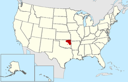

塞阔亚州
维基百科，自由的百科全书
| 本条目中关于2009年危机的章节记述一项正在发生的事件。随着事件的进展，相关信息可能会迅速变化，最初的新闻报道可能并不可靠。 |
| 塞阔亚州 | |||
| |||
 塞阔亚州政府实际控制区（红色），2009年11月 | |||
| 别称 | 五族之州（The Five Nations State） | ||
|---|---|---|---|
| 首府 | 马斯科吉 | ||
| 最大城市 | 塔尔萨（2000年393,049人） | ||
| 州长 | 德尔伯特·J·福基勒（Delbert J. Fourkiller） | ||
| 立法机构 | 州议会（Legislature） | ||
| 官方语言 | 英语、切罗基语、乔克托语、马斯科吉语 | ||
| 沿革 | |||
| - 制宪会议开幕 | 1905年8月21日 | ||
| - 宪法公投 | 1905年11月7日 | ||
| - 《授权法》 | 1906年6月16日 | ||
| - 加入联邦 | 1907年11月16日 | ||
| 面积 | |||
| - 估计 | 约88,000平方公里（总面积） | ||
| 人口 | |||
| - 估计 | 1,777,157（2000年普查）；1,866,547（2008年估计） | ||
| 县 | 41 | ||
| 时区 | 中部时间 | ||


塞阔亚州（State of Sequoyah）是美国中南部的一个州，西接俄克拉何马州，北接堪萨斯州和密苏里州，东接阿肯色州，南隔红河与得克萨斯州相望。州境大致相当于原印第安领地，总面积约34,000平方英里。2000年人口普查人口为1,777,157人。首府马斯科吉，最大城市为塔尔萨。
州名取自发明切罗基音节文字的塞阔亚。1905年，五个文明部落的领袖在马斯科吉召开塞阔亚制宪会议，起草州宪法；1907年11月16日，塞阔亚州与俄克拉何马州同日加入联邦。[1]
2009年危机以来，州政府实际控制的范围缩小到东北部15个县和俄克拉何马州的波尼县，与南部各县失去联系。
目录[隐藏] |
[编辑]历史
[编辑]印第安领地
1830年《印第安人迁移法》通过后，切罗基、乔克托、奇克索、克里克和塞米诺尔五族被迫从美国东南部迁往密西西比河以西，切罗基人称这段路为“血泪之路”。各族在新土地上建立了自己的政府、法院和学校，切罗基族首府设在塔勒阔。
1898年的《柯蒂斯法》规定部落政府于1906年3月4日解散，部落公有土地分配给个人。面对与西边的俄克拉何马领地合并建州的前景，五族领袖在1903年后改为支持印第安领地单独建州。
[编辑]塞阔亚制宪会议
1905年7月，切罗基族首领威廉·C·罗杰斯和乔克托族首领格林·麦柯坦在切罗基族人詹姆斯·A·诺曼的倡议下发出召集令。会议于8月21日在马斯科吉的辛顿剧院开幕，克里克族首领普莱森特·波特任主席，克里克族诗人亚历山大·波西任秘书。[2]150多名代表起草了约35,000字的宪法，划定了县界，并设计了州印。
11月7日的公投中，宪法以56,279票赞成、9,073票反对获得通过。[2]西奥多·罗斯福总统在12月5日的国情咨文中主张两领地合并为一州。[3]
[编辑]分立建州
1906年春，参议院在审议《授权法》时，以波特·J·麦坎伯提出的修正案为基础，允许印第安领地选民另行表决是否依塞阔亚宪法单独建州，与同时期给予亚利桑那的选择相似。[来源请求]罗斯福于6月16日签署该法。同年11月，印第安领地选民以多数票选择单独建州，奥色治族保留地也随之并入。1907年11月16日，罗斯福宣布塞阔亚州和俄克拉何马州同时加入联邦。[4]
批评者认为，此举主要是为了在参议院多增加两个民主党席位。[5]1910年的公投将首府定在马斯科吉。
[编辑]20世纪
1901年在红叉发现石油后，塔尔萨发展为“世界石油之都”。1921年塔尔萨种族屠杀中，格林伍德区被白人暴徒焚毁。大河水坝管理局于1940年建成彭萨科拉坝，形成切罗基大湖。1970年代起，五族先后恢复民选政府。美国航空在塔尔萨国际机场设有其最大的维修基地。
[编辑]2009年危机
2月17日，州长福基勒宣布紧急状态，塞阔亚国民警卫队在格鲁伯营集结，接管塔尔萨国际机场和44号州际公路沿线收费站。[6]3月，俄克拉何马城的俄克拉何马州政府停止对外广播。
4月起，州政府与麦卡莱斯特、杜兰特等南部各县失去联系，乔克托族和奇克索族政府的下落不明。5月，波尼县县委会请求由塞阔亚州代管，州卫队随即进驻，以保护基斯通湖和基斯通坝。[7]
州政府依靠大河水坝管理局的水电和塔尔萨炼油厂的燃料维持运转，并与切罗基族政府在塔勒阔设立联合救济中心。据《塔尔萨世界报》报道，截至10月已有约62,000名来自南部各县和堪萨斯州的撤离者登记。[8]
[编辑]地理
州境东部是欧扎克高原和沃希托山脉，西部是奥色治丘陵和草原。阿肯色河自西北向东南穿过塔尔萨和马斯科吉，格兰德河与伊利诺伊河在东北部汇入阿肯色河。
[编辑]实际控制区各县
| 县 | 县治 | 人口（2000年） |
|---|---|---|
| 阿代尔县 | 斯蒂尔韦尔 | 21,038 |
| 切罗基县 | 塔勒阔 | 42,521 |
| 克雷格县 | 维尼塔 | 14,950 |
| 特拉华县 | 杰伊 | 37,077 |
| 哈斯克尔县 | 斯蒂格勒 | 11,792 |
| 梅斯县 | 普赖尔 | 38,369 |
| 马斯科吉县 | 马斯科吉 | 69,451 |
| 诺沃塔县 | 诺沃塔 | 10,569 |
| 奥色治县 | 波哈斯卡 | 44,437 |
| 渥太华县 | 迈阿密 | 33,194 |
| 罗杰斯县 | 克莱尔莫尔 | 70,641 |
| 塞阔亚县 | 索利索 | 38,972 |
| 塔尔萨县 | 塔尔萨 | 563,299 |
| 瓦戈纳县 | 瓦戈纳 | 57,491 |
| 华盛顿县 | 巴特尔斯维尔 | 48,996 |
| 波尼县（代管） | 波尼 | 16,612 |
| 合计 | 1,119,409 |
[编辑]州旗与州印
州印由1905年的制宪会议设计，1907年沿用为州印。中央的大五角星每个角内各有一个部落的徽记：切罗基族的七角星与橡叶环、克里克族的犁与麦捆、塞米诺尔族划独木舟的猎人、奇克索族的武士，以及乔克托族的战斧、弓和箭。五角星上方是手持音节文字表的塞阔亚。[9]州旗为深蓝底，中央是州印，下方写有州名。[来源请求]
[编辑]参见
[编辑]参考资料
- ^ Allen, Clinton M. (1925). The "Sequoyah" Movement. Oklahoma City: Harlow Publishing. （英文）
- ^ Maxwell, Amos D. (1950). "The Sequoyah Convention". The Chronicles of Oklahoma 28. （英文）
- ^ Roosevelt, Theodore (1905-12-05). Fifth Annual Message to Congress. （英文）
- ^ "Two new states proclaimed". 《纽约时报》. 1907-11-17. （英文）
- ^ Burton, Jeffrey (1995). Indian Territory and the United States, 1866–1906. Norman: University of Oklahoma Press. （英文）
- ^ "Guard takes over airport, turnpikes". 《塔尔萨世界报》. 2009-02-18. （英文）
- ^ "Pawnee County asks to join Sequoyah administration". 美联社. 2009-05-12. （英文）
- ^ "62,000 evacuees registered". 《塔尔萨世界报》. 2009-10-25. （英文）
- ^ Map of the State of Sequoyah (1905). St. Louis: August Gast Bank Note and Litho. Co. （英文）